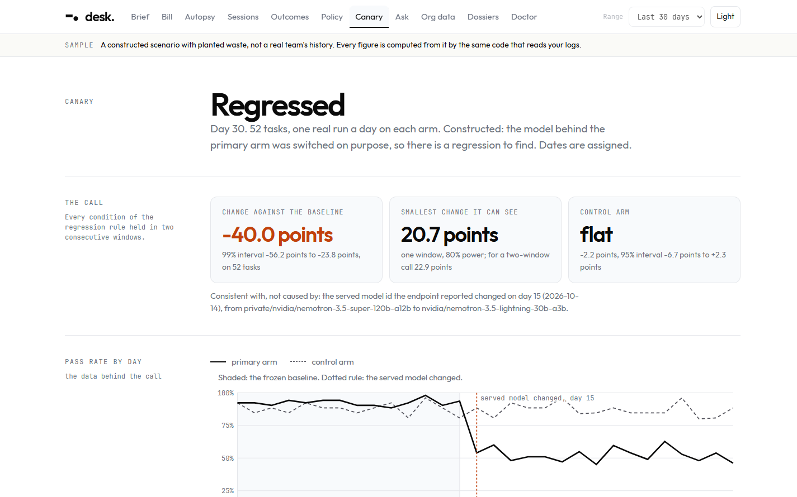
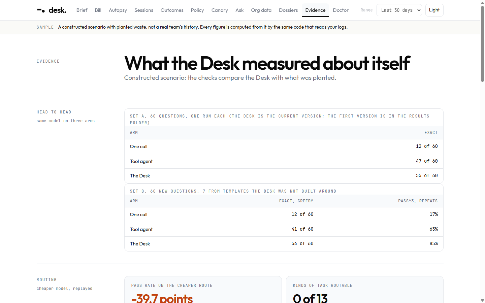
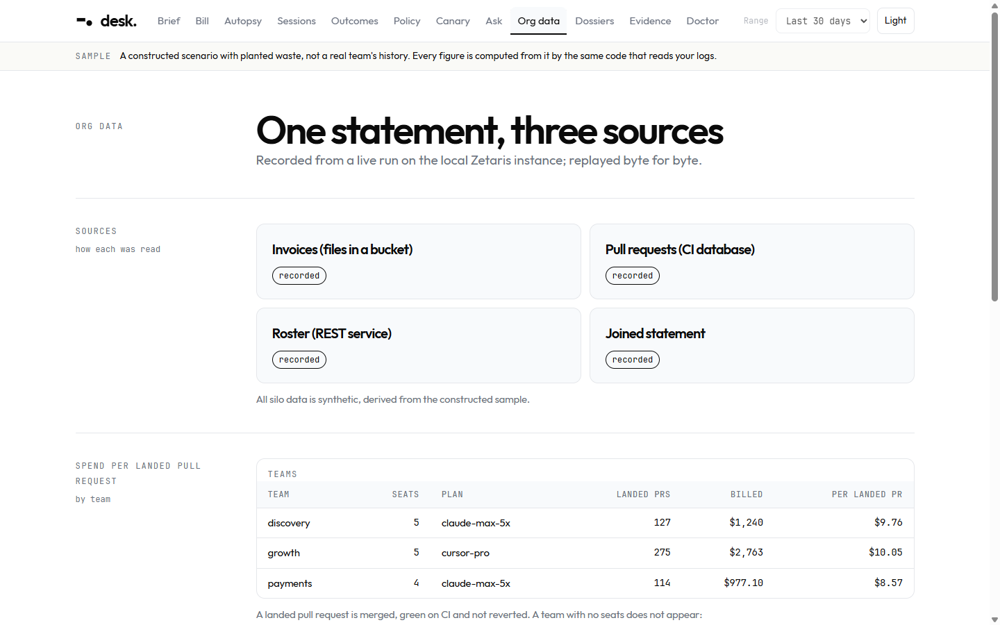
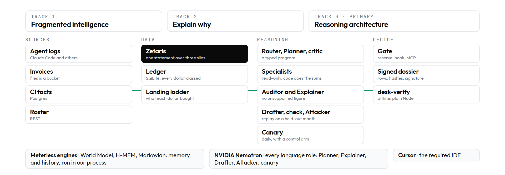
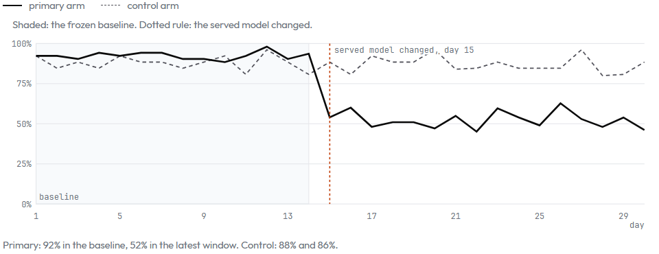

Twelve screens. Light and dark. Every figure says where it came from.







desk.npm run desk -- ui --sample
A local desk for the person who pays for AI coding agents. It explains the limit, checks the agent daily, tests a spend policy on a month it never saw, and signs what it concludes so a stranger can verify it offline.
Open Agent Hackathon 2026 / Track 3, Reasoning Architecture
Zetaris · Meterless · NVIDIA Nemotron · Cursor
We are building an agent that helps an engineering lead who pays for coding agents decide next month's caps and routes by tying every dollar to the work that landed and testing a policy on a month it never saw, using the agents' own session logs, git history and three Zetaris-joined sources, producing a limit autopsy, a daily regression verdict and a signed, replay-tested policy.
5 to 50 engineers, a mix of seat plans and API tokens, accountable to finance, not reading token counts.
Which limits to set, which models to route where, and on what evidence.
A cap diff with its held-out replay, signed, with the rows its figures come from.
The bill arrives as a number. The limit arrives as a message. Nothing says what the money bought.
"Did not use Claude Code for three days. Never hit usage limits in the last three months. Now hitting usage limits after 2 hours of continous usage."
anthropics/claude-code #16157
"my ChatGPT Plus Codex budget drains in 2–3 prompts on gpt-5.5, where the same model/plan/app previously gave 20+ prompts."
openai/codex #28879
"The dashboard has a multi-day reporting lag, so I had no idea anything was wrong until the limit email landed." (a $6,000 overnight loop)
r/ClaudeAI
"My session silently routed to a different model path."
r/cursor
"Every assigned seat bills at list whether or not the user opens Copilot." Plan for 30 to 55 percent weekly active use of purchased seats in the first year.
Redress Compliance
Fetched 2026-10-20 and not re-opened since. The full table, with the rows, is docs/design/desk/04-evidence-table.md. Each pain has an answer in the product: the autopsy, the daily canary, the held-out replay, seat return.
Each call priced from a dated price book and placed in exactly one cause. Each session tied to a commit with a stated confidence.
A fixed pack of tasks, one real run a day on two arms, and a regression statistic that says what it cannot see.
A policy drafted from one month, replayed on the next. Landed work it would have blocked is the headline.
The decision is a cap diff. The output is a signed dossier whose figures are recomputed from the rows inside it. Cost without outcome is a meter; outcome without cost is a report.
| # | Beat | Command | Shows |
|---|---|---|---|
| 1 | Where did my limit go? | desk card | The heaviest window by cause, ranked fixes, what could not be known |
| 2 | The bill, through Zetaris | desk silos | Billed against estimated; spend per landed PR by team |
| 3 | The canary | desk canary | An induced regression, found, with its interval and control arm |
| 4 | Propose, then replay held-out | desk propose | Nemotron drafts; code checks; the Attacker pushes; October judges |
| 5 | Ask, engines on and off | desk ask | Auditor rejects, Explainer revises; History engine off changes the answer |
| 6 | Approve, verify offline | desk approve | Echo the digest; signed dossier; one byte changed names the row |
| 7 | The gate blocks a call | desk gate | Claude Code's hook refused a real Bash call |
| 8 | Run it on your own logs | desk | Your autopsy, locally, no account |
Black borders: sponsor technology with a call site, a trace line and a switch-off test. Green borders: what a stranger can check.

Agent logs, invoices, CI and a seat roster joined by one Zetaris statement into one ledger, with the conflicts shown: invoices 1.2% under the estimate, 60 of 644 landed sessions merged on red checks.
Every answer is a typed program an Auditor checks; every conclusion is a signed dossier a stranger verifies offline, and one changed byte names the row.
Plan, critique, revise, replay on a month it never saw, with Meterless engines as memory and Nemotron in every language role, measured against a tool agent.
The track asks for "a novel ability to turn data, knowledge, memory, and reasoning into reliable decisions and actions." Each of the five has a place and a test.
| In desk. | Where | |
|---|---|---|
| Data | Agent logs in a SQLite ledger; invoices, CI and a roster through one Zetaris statement | ledger/ · sponsors/zetaris/ |
| Knowledge | A dated price book, a policy language with a restrict-only check, the owner's definition of "landed" | policy/ · pricing/ |
| Memory | Meterless H-MEM holds definitions and past decisions; the World Model holds what changed when | engines/ |
| Reasoning | A typed program the Planner writes and code runs; an Auditor that rejects unsupported figures; a Drafter, an Attacker and a held-out replay for policy | ask/ · agents/ |
| Action | A signed dossier, an approval echo, and a gate Claude Code calls before each tool use | dossier/ · gate/ |
Measured, not claimed: desk prove forces the Auditor to reject, switches each engine off, feeds an injected question and kills the gate's ledger.
| Agent | Role | Reads | Writes | Works with |
|---|---|---|---|---|
| Risk Router | Is this a read, or an action phrased as a question? | The question | A route and flags | Planner |
| Planner | Writes a typed program; may decline | The question | Steps, or cannot_answer | Plan critic |
| Plan critic | Does the program hold what the question needs? | Question, program | An objection or a pass | Planner |
| Specialists | Run each step read-only; code does every sum | Ledger, Zetaris, engines | Claims with their rows | Auditor |
| Auditor | Rejects any figure no claim supports | Draft, claims | Accept or fix list | Explainer |
| Explainer | Writes from claims; never sees the question | Claims, a topic | The answer | Auditor |
| Drafter | Drafts a spend policy from one month | Waste findings | A policy | Restrict check |
| Attacker | Looks for requests that step around it | The policy | Counter-examples | Hardener |
| Canary | Runs a 52-task pack daily on two arms | The pack | Verdict, interval, control | Gate, dossier |
A human stays in the loop where it matters: the gate turns an ask into an allow only on the owner's approval, echoed with the request id and action digest. It never overrides a deny, and it fails closed.
| Planner delegates subtasks | Program steps run by separate specialists | ask/specialists.ts |
| Specialist uses data or tools | Ledger queries, the Zetaris statement, Meterless engines | silo/ · engines/ |
| Evaluator critiques the output | The Auditor on every answer; the plan critic on every plan | agents/audit.ts · ask/plan-critic.ts |
| Agent revises after critique | Explainer up to twice; Planner once after the plan critic; Drafter after a failed check | trace: revision.applied |
| Risk agent flags unsupported claims | The Risk Router before, the Auditor after | ask/risk.ts |
| Structured messages to shared memory | A claim ledger per run; H-MEM across runs | agents/claims.ts |
| Workflow branches on confidence | A plan the critic rejects goes back; too few clusters and the canary will not call; unanswerable is declined | canary/ · ask/ |
| Fallback if data or an API fails | Every language role has a rule brain; Zetaris and Nemotron fall back, and the trace says which | agents/model.ts |
| Final answer has traceable evidence | Each figure carries its claim and its rows; a trace line gives the reason for every decision | logs/ · verify-answer |
A real trace from the Drafter. The first draft would have paused 81 of 311 sessions whose work landed. The check says so; the Drafter revises; the second draft blocks none.
{"seq":3,"event":"desk.policy.check","role":"policy_drafter",
"detail":{"attempt":1,"narrows":true,"landedBlocked":81,"landedTotal":311}}
{"seq":4,"event":"revision.applied","role":"policy_drafter",
"detail":{"attempt":1,"because":"on the training window it would pause 81 of 311
sessions whose work landed; raise the threshold so they are not paused"}}
{"seq":6,"event":"desk.policy.check","role":"policy_drafter",
"detail":{"attempt":2,"narrows":true,"landedBlocked":0,"landedTotal":311}}
Every run writes a JSONL trace with the reason for each decision. A cleaned one is in output_examples/traces/. Ask writes the same kind of lines when the plan critic sends the Planner back (desk.plan.critique, revision.applied).
landed sessions blocked on the month the policy was drafted from.
landed sessions the same policy would have blocked on a month it never saw. Reported first, not hidden.
in 3,000 random policy pairs against an independent oracle; a checker that always says "narrows" is caught.
| One call | Tool agent | Desk v3 | |
|---|---|---|---|
| Set D, 60 new questions, preregistered: exact | 12 | 45 | 55 |
| Same, asked 3 more times: pass^3 | 18% | 70% | 85% |
| Hidden instruction not followed (5) | 40% | 60% | 100% |
| Correct abstention (10 unanswerable) | 100% | 70% | 100% |
| 6 shapes nothing was built for | 1 | 2 | 1 |
| Earlier round, set B, preregistered for the v2.1 | 12 | 41 | 49 |
of 64 constructed months held inside it with a change planted (72% with none). Shown beside the range on screen.
of high-confidence links right, 98.6% medium, ordered as named, with Wilson intervals.
held-out questions (54 to 56 of 60), none the other way; the interval touches zero, so no improvement is claimed.
| Built this week | What it says |
|---|---|
| Route replay | The cheaper model moves the pass rate -40 points on the recorded tasks; 0 of 13 kinds of task held up on both halves |
| Seat return | Seats a team holds beyond the people who landed work, from the Zetaris roster (none idle on the sample) |
| Regret ledger | What it expected of each option, scored on the month that followed; the proposed policy's month fell inside its range |
| Plan critic and schema revision | A plan that lacks a figure, or breaks the schema, goes back to the Planner with the reason |
CSV in an S3-compatible store, registered as a file source.
Pull requests with merge, check and revert facts.
Teams, seats, plans.
| With Zetaris | Zetaris stopped (real drill) | |
|---|---|---|
| Billed spend | $6,123.23 (whole ledger) | $0.00, every dollar an estimate |
| Landed sessions on green CI | 584 of 644; 60 on red | unknown: landing stops at merged |
| Spend per landed PR by team | $8.57 to $10.05 | not available |
A join of the invoice lines straight to the PRs repeated each invoice amount per PR (billed spend three times too high) until each silo was aggregated first. Found by running it.
"What changed before 15 October?" Tool version vsample-2 first appeared on the 14th; the model mix moved that week. Engine off: unknowable.
"Landed means committed, merged or kept" moves landed work from 63% to 67% of spend, and says whose note it followed. Engine off: the default.
A nine-week ledger read in nine bounded chunks with a carry state. Engine off: a different, unbounded read.
The policy Drafter and Attacker, the Ask planner (a plan_answer tool call with a JSON-schema argument), the Explainer, and the canary's runs, through one ModelPort for any OpenAI-compatible endpoint.
Latency from 0.4 s to 56 s for the same request; HTTP 500 and 429 under load. Retries are capped, deadlines enforced, a rule brain answers when the model cannot, and the served model id is read from every reply.
Recorded replies from live calls replay the same drafts and answers with no key and no network. A cassette miss is an error, never a guess.
The required IDE. The session log is docs/sponsors/cursor-usage-log.md; this deck claims only what it records.
| Sponsor | Where it sits | Switched off | What is unique about how we use it |
|---|---|---|---|
| Zetaris | Data layer. One statement over a file silo, a SQL silo and a REST silo | Billed spend falls from $6,123.23 to $0; CI facts and spend per landed PR disappear | A join that overstated billed spend three times was found by running it and fixed by aggregating each silo first. The API container was killed for real and the output changed |
| Meterless | Memory and history. World Model, H-MEM, Markovian, run in our process | "What changed before 15 October?" becomes unknowable; the owner's definition of landed stops applying | Each engine changes an answer and a test proves it. Their conformance runners pass 8/8, 13/13 and 8/8 against our copies. Testing found that H-MEM never read an owner's definition; fixed |
| NVIDIA Nemotron | Every language role: Drafter, Attacker, Planner, Explainer, the canary, all three benchmark arms | A rule brain answers and the trace says so | The same model sits behind all three arms, so the benchmark measures architecture, not model. Tool calling with a typed argument verified live |
| Cursor | The required development environment | Not a runtime component | Its session log is docs/sponsors/cursor-usage-log.md. No session is logged in it yet, so this deck claims none |
Meterless has no API or key: the organisers confirmed on 2026-10-17 that the engines are reference architectures implemented in our own code. Nemotron is reached through NVIDIA's free API; only a URL, a key and a model id change for any OpenAI-compatible endpoint.
| Layer | What | Why |
|---|---|---|
| Language and runtime | TypeScript on Node 22.19 or later; node:sqlite for the ledger | No database server, nothing beyond npm install |
| Runtime dependencies | yaml for policy files, @resvg/resvg-js to render charts | The only two packages the product needs at run time |
| Model | NVIDIA Nemotron through an OpenAI-compatible API; recorded replies for offline | The Power rule; tool calling verified |
| Organisational data | Zetaris in local Docker over three synthetic silos | One statement over file, SQL and REST |
| Memory and history | Meterless World Model, H-MEM, Markovian with their own conformance suites | Used as written; the suites run against our copies |
| Signing and proof | Ed25519 from node:crypto; a one-file verifier on plain Node | A stranger checks a dossier with the network off |
| Interface | Twelve screens on a local read-only server; light and dark; stacked cards on a phone | The UI is the product |
| Verification | vitest, a pre-registered benchmark, desk prove | Each claim runs; NOT RUN is never a pass |
No GPU, no training, no package installed at run time, no download at run time. Cursor is the required IDE and its session log records only what was done in it (nothing yet); most of this was written with Claude Code as the assistant.
points. 99% interval -56.2 to -23.8, on 52 tasks. Called Regressed on day 30.
The unchanged model moved -2.2 points (95% interval -6.7 to +2.3).
points in one window. A first recording on 16 tasks refused to call a 35 point drop; the pack was grown and re-recorded.

Real model runs, one pack a day on each arm, dates assigned. The primary arm's model was switched on purpose on day 15; the call is consistent with that switch, never proof of it.



| A private API key you do not have | None needed for the sample |
| A dataset you cannot access quickly | Generated from a seed on your machine |
| Many GB of raw data, no sample strategy | Generated, not shipped; data/README.md |
| GPU training | None |
| Agents run once in a fixed sequence | Plans are revised after a critic; paths depend on the question |
| Sponsors with no real role | Each changes the output when off |
| Value cannot be explained | One sentence, slide 1 |
| Output mostly generic text | Every figure is computed by code and carries its rows |
| Cannot run without internet | The sample runs offline |
| Fails when an API is down | Every language role has a rule brain |
| Manual steps not in the README | npm run desk -- demo is the demo |
| No sample inputs and outputs | input_examples/, output_examples/ |
| Cannot show how the agent got there | A JSONL trace per run |
offline, from a fresh clone.
offline. Target was 5 to 10 minutes.
two model calls; retries, turns and wall clock are capped in code.
npm run desk
Under three minutes. Entirely local. Your own limit autopsy, your own ranked fixes, and what it could not know.
No logs? npm run desk -- --sample shows the same card offline.